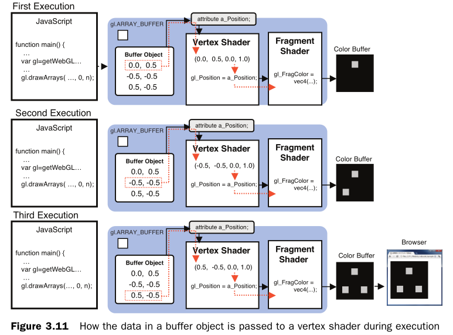
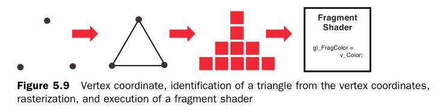

webgl - 颜色与纹理
将非坐标数据传入顶点着色器
attribute vec4 a_Position;
attribute float a_PointSize;
void main() {
gl_Position = a_Position;
gl_PointSize = a_PointSize;
}
单点
let a_Position = gl.getAttribLocation(gl.program, 'a_Position');
gl.vertexAttrib3f(a_PointSize, 1.0, 2.0, 3.0);
缓冲区
let vertices = new Float32Array([
0.0, 0.5, -0.5, -0.5, 0.5, -0.5
]);
let vertexBuffer = gl.createBuffer();
gl.bindBuffer(gl.ARRAY_BUFFER, vertexBuffer);
gl.bufferData(gl.ARRAY_BUFFER, vertices, gl.STATIC_DRAW);
let a_Position = gl.getAttribLocation(gl.program, 'a_Position');
gl.vertexAttribPointer(a_Position, 2, gl.FLOAT, false, 0, 0);
gl.enableVertexAttribArray(a_Position);
一个缓冲区给多个变量提供数据
vertexAttribPointer
let verticesSizes = new Float32Array([
0.0, 0.5, 10.0, // the 1st point
-0.5, -0.5, 20.0, // the 2nd point
0.5, -0.5, 30.0 // the 3rd point
]);
let FSIZE = verticesSizes.BYTES_PER_ELEMENT;
gl.vertexAttribPointer(a_Position, 2, gl.FLOAT, false, FSIZE * 3, 0);
gl.vertexAttribPointer(a_PointSize, 1, gl.FLOAT, false, FSIZE * 3, FSIZE * 2)
]);
BYTES_PER_ELEMENT
长度跟声明的数据类型有关系
Int8Array; // 1
Uint8Array; // 1
Uint8ClampedArray; // 1
Int16Array; // 2
Uint16Array; // 2
Int32Array; // 4
Uint32Array; // 4
Float32Array; // 4
Float64Array; // 8
shader变量类型
只有三种类型
attribute
uniform
varying
attribute
- 只能在vertexshader中声明、使用，不能在fragment shader中声明、使用
- 数据将从着色器外部传递给变量
- 数据类型只能为：float，vec2，vec3，vec4，mat2，mat3，mat4
- 一般用来声明一些顶点信息
- 顶点坐标、顶点大小、顶点颜色、纹理坐标、法线
- 使用getAttribLocation获取位置
- 使用vertexAttribPointer、vertexAttrib[1234]f[v]赋值
uniform
- 能在vertex、fragment 声明、使用，常量、不可被修改
- 一般用来声明一些片源信息
- 变换矩阵、材质、光照参数、颜色
- 使用getUniformLocation获取位置
- 使用uniform[1234][fi][v]赋值
varying
- 是vertex和fragment shader之间做数据传递用的，一般vertex shader修改varying变量的值，然后fragment shader使用该varying变量的值
- varying变量在vertex和fragment shader二者之间的声明必须是一致的
- 数据类型只能为：float，vec2，vec3，vec4，mat2，mat3，mat4
- JS无法直接给varying变量赋值，需要借助attribute变量接受外部值，再在顶点着色器内部给varying变量赋值
顶点着色器和片元着色器之间的数据传输
读取顶点信息
执行顶点着色器，读取1个顶点的相关数据
图形装配
将孤立的顶点坐标装配成几何图形，图形的类别由gl.drawArrays的第一个参数决定，比如gl.POINTS, gl.TRIANGLES
光栅化
将装配好的几何图形转化为片元，将矢量的几何图形转变为栅格化的片元（像素）
执行片元着色器
对各个片元着色
内插
- 插值，缺少数据才需要插值，比如想要把一系列散点连成平滑曲线，相邻已知点之间缺少很多点，此时就需要通过内插填补缺少的数据，最终平滑曲线上除已知点之外的所有点都是插值得到的
- 例如Photoshop的自定义渐变，我们只需要设置几个点的颜色就能自动生成一整条渐变带，这几个点之间的颜色都是通过内置插值算法得到的
- varying变量的值传递到片元着色器之前进行的插值过程被称为内插，同样，我们也可以利用内插生成渐变
- 顶点着色器是逐顶点执行的
- 片元着色器是逐片(一个像素一个像素绘制的)元执行的
- 就像一个双重循环，外层遍历顶点，内层遍历片元


将纹理图贴在几何图形上的步骤
- 准备好映射到几何图形上的文理图像
- 为几何图形配置纹理映射方试
- 加载文理图像，对其进行一些配置，在WebGL中使用它。
- 在片元着色器中将相应的纹素从纹理中抽取出来，并将纹素的颜色赋给片元。
2的幂数?
- 2的幂数是为了迎合一项技术：mipmap（为了加快渲染速度和减少图像锯齿，贴图被处理成由一系列被预先计算和优化过的图片组成的文件）
- 需要在WebGL读取纹理之前，开启mipmap处理
- gl.generateMipmap(gl.TEXTURE_2D)
- 调用后会先把图片按2的倍数逐渐缩小7张图片，并且缓存起来
mipmap
- 缺点：会占用内存，因为mipmap会根据摄像机远近不同而生成对应的七个贴图，所以必然占内存！
- 优点：加快渲染速度和减少图像锯齿
- mipmap这个名称来源:mip实际上是三个拉丁词的首字母：multum in parvo，翻译成英文就是：much in little，其意思也就是说可以在一个纹理对象中生成很多不同尺寸的纹理。
纹理坐标
- st坐标、也有叫uv坐标
- 纹理坐标是一种新坐标系，与canvas和WebGL坐标系都不一样，原点在canvas左下角，s轴向右为正，t轴向上为正，canvas右上角坐标为(1.0, 1.0)
gl.pixelStorei(gl.UNPACK_FLIP_Y_WEBGL, true)

图片的显示设置
- gl.texParameteri(gl.TEXTURE_2D, gl.TEXTURE_MIN_FILTER, gl.LINEAR);
- 第一个参数是固定的
- 第二个参数有TEXTURE_MAG_FILTER、TEXTURE_MIN_FILTER、TEXTURE_WRAP_S、TEXTURE_WRAP_T
TEXTURE_MAG_FILTER
- 纹理放大筛选器
- 取值：gl.LINEAR(default value)、gl.NEAREST
TEXTURE_MIN_FILTER
- 纹理缩小筛选器
- 取值：gl.LINEAR、gl.NEAREST、gl.NEAREST_MIPMAP_NEAREST、gl.LINEAR_MIPMAP_NEAREST、gl.NEAREST_MIPMAP_LINEAR(default value)、gl.LINEAR_MIPMAP_LINEAR
- NEAREST_MIPMAP_NEAREST
- 这种过滤方式会选取最接近屏幕上纹理的mipmap，并且使用NEAREST来实现。
- LINEAR__MIPMAP_NEAREST
- 这种过滤方式会选取最接近屏幕上纹理的mipmap，并且使用LINEAR来实现。
- NEAREST_MIPMAP_LINEAR
- 这种过滤方式会选取两个最接近的mipmap，并且使用NEAREST来实现，最后的颜色会是两种样本的平均值。
- LINEAR_MIPMAP_LINEAR
- 这种过滤方式会选取两个最接近的mipmap，并且使用LINEAR来实现，最后的颜色会是两种样本的平均值。这也叫做三线性过滤(trilinear filtering)。
TEXTURE_WRAP_S
- S轴重复方式
- 取值：gl.REPEAT (default value)、gl.CLAMP_TO_EDGE、gl.MIRRORED_REPEAT
TEXTURE_WRAP_T
- T轴重复方式
- 取值：gl.REPEAT (default value)、gl.CLAMP_TO_EDGE、gl.MIRRORED_REPEAT
配置纹理
1.对纹理图像进行y轴反转 gl.pixelStorei(gl.UNPACK_FLIP_Y_WEBGL, 1);
2.开启0号纹理单元 gl.activeTexture(gl.TEXTURE0);
3.向target绑定纹理对象 gl.bindTexture(gl.TEXTURE_2D, texture);
4.配置纹理参数 gl.texParameteri(gl.TEXTURE_2D, gl.TEXTURE_MIN_FILTER, gl.LINEAR);
5.配置纹理图像 gl.texImage2D(gl.TEXTURE_2D, 0, gl.RGB, gl.RGB, gl.UNSIGNED_BYTE, image);
6.将0号纹理传递给着色器 gl.uniform1i(u_Sampler, 0);
资料
- https://webglfundamentals.org/index.html
- https://github.com/fem-d/webGL
- http://webgl-lesson.wysaid.org/
- https://csgrandeur.gitbooks.io/webgl-learn/content/
- http://www.tentou.cn/2017/03/21/HTML5%E5%92%8CWebGL%E7%BC%96%E7%A8%8B/
Thanks!
Q&A